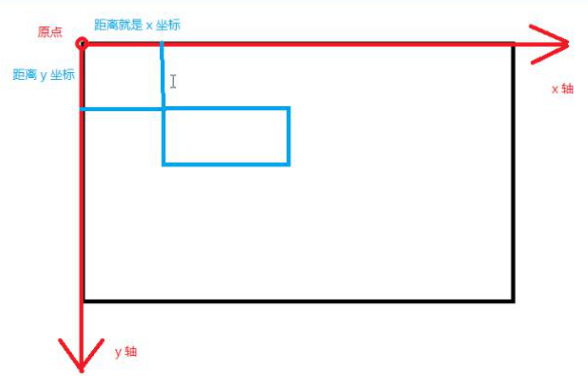

canvas
- 游戏
- 可视化数据 重点
- banner广告
- 多媒体
- 未来
- 模拟仿真 threejs.org 将3d引擎引入
- 远程协作
- 图形编辑
入门
//默认宽高 300*150 300*150个像素点
//不要用css来设置,如果使用css来设置画布的大小,不会增加像素点,只会将像素扩大
//canvas只能展示画图的内容,不能绘图,每一个canvas都有一套工具,利用工具可以在cancas上进行绘图
//canvas.getContext('2d') 就返回一个在当前页面上绘图的工具集
//这个工具集专门绘制平面图形,里面有很多方法
//<canvas width="600" height="400"></canvas>
//从页面获取canvas的DOM元素
//开始绘图
var ctx = cas.getContext('2d');
ctx.moveTo(100, 100);//描点
ctx.lineTo(200, 200);//描点
ctx.stroke();//描边绘图
canvas的直角坐标系

canvas绘制虚线
<body>
<canvas id="canvas"></canvas>
<script>
var cas = document.getElementById("canvas");
var ctx = cas.getContext('2d');
ctx.moveTo(100, 100);//描绘图的起始点
ctx.lineTo(200, 200);//描点
直线的终点
ctx.stroke();//连点描边
</script>
</body>
非零环绕原则
- 如果需要判断某区域是否要填充颜色,我们需要 非零环绕原则来判断,在这块区域选点,随便向任意 方向拉出去一条线L,如果画的图的线条穿过L线 是顺时钟方向的记1,反之记-1
闭合路径
- closePath(): 将绘图的起点和终点连接起来
- closePath与lineto直接闭合的区别:closePath是完美闭合
线宽的问题
lineWidth()
canvas在进行绘制线条的时候,如果线宽只要是奇数值都会去做取消锯齿的操作
路径
- 状态: 在需要改变颜色绘制方法,改变颜色,绘制方法,改变一些属性...就需要改变绘图状态.使用beginPath()方法.开启一个新的路径.不会影响其他的路径
线型相关的属性
- lineCap(): 线帽
- lineJoin(): 两线相交的处理
虚线
- ctx.setLineDash(数组); : 设置虚线的数组
- ctx.getLineDash(); : 获取虚线的数组
- ctx.lineDashOffset = 值 : 初始位置的偏移量
//绘制水平的虚线
ctx.moveTo(100,100);
ctx,lineTo(400,100);
//数组里面表示每段的长度,会循环遍历的去数组里面的值
ctx.setLineDash([10,5,5,5,6,7,8,9]);
ctx.stroke();
给线设置颜色
- ctx.strokeStyle = 'rgb(0,255,0)'; 设置描边的颜色
- ctx.fillStyle = 'rgb(0,255,0)'; 设置填充的颜色
绘制坐标网格
var width = 10;
var rows = cas.height / width;
var cols = cas.width / width;
for (var i = 0; i < rows ; i++){
for (var j = 0 ; j < cols; j++) {
ctx.moveTo( j * width, ( i + 1 ) * width );
ctx.lineTo( j * width + width, ( i + 1 ) * width );
// 开始绘制竖着的
ctx.lineTo( j * width + width, i * width );
}
}
ctx.stroke();
绘制坐标系
见demo
在坐标轴中绘制折线图
封装Line构造函数
- 如何使用面向对象的方式进行编程
- 找找看有没有第三方库可以帮你完成功能
- 如果没有,自己创建一个对象来完成功能
绘制矩形
//矩形
//ctx.rect(x,y,w,h);
//ctx.strokeRect(x,y,w,h);
ctx.rect(100,50,200,100);
ctx.stroke();//或者用 ctx.fill
//2
ctx.strokeRect(100,140,200,100);
//3
ctx.fillRect(100,400,200,100);
//4
crx.clearRect(100,400,200,100);//清除矩形区域
圆弧
- ctx.arc(x,y,r,startAngle,endAngle,clockwise);
- ctx.arc(cas.width/2,cas.height/2, 100,0,2*Math.PI);
- x,y是圆心坐标
- r是圆的半径
- startAngle 圆弧开始的角度
- endAngle 圆弧结束的角度
- clockwise true按顺时针方向挥绘制,反之,亦然
- ctx.arc(cas.width/2,cas.height/2, 100,0,2*Math.PI);
动态画圆
var timer=setIntercal(function(){
a++;
if(a>=270){
clearInterval(timer);
a=270;
}
ctx.moveTo(cas.width/2,cas.height/2);
ctx.arc(cas.width/2,cas.height/2,100,toRadian(-90),
toRadian(a)
);
},15);